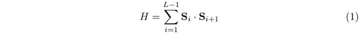
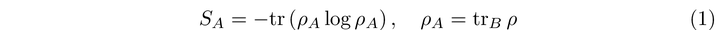

Numerical-Simulation-of-Rydberg-Atoms-e546452a380648799eb3e3dc60d662fe
It is difficult to model the behaviour of a large group of atoms, especially when they’re all entangled. These types of systems are called quantum many-body systems. They give rise to lots of new physics, and novel phases of matter. In the previous post, I talked about how a team managed to arrange 256 atoms in a lattice to perform simulations on quantum phases of matter.
Numerical simulation
It is interesting to see the comparisons between simulation and experiment. The paper [1] uses a tehcnique called the density matrix renormalisation group algorithm. There are two knobs we can adjust. The first knob is the detuning, which is represented by a Greek letter delta. The second knob is the blockade radius. When we set these two quantities to different values When we vary these two parameters in a grid, we can measure the bipartite entanglement entropy, S.
[image is not supported]
The graph above is a heat-map, taken from [2]. The different colours of the heat-map represent the degree of entanglement entropy. The y-axis is the blockade length, and the x-axis is our degree of detuning. As you can see, there are sweets spots in our detuning such that our system is maximally entangled. There are also phase transitions if we keep the blocking radius constant, and then adjust the detuning. In the case where the blockade radius is kept at 1.2, shown by the dotted line, continuously increasing the detuning triggers a phase transition into the checkerboard state.
Density matrix Renormalization group
In the previous post, I outlined the shape of the Hamiltonian which governs this system. To find this ground state, we use the DMRG, and only restrict interactions to atoms which are sufficiently close. DMRG works by considering the ground state of only a small block of atoms and them iterating to mucn larger sizes. It’s the most precise algorithm to compute ground states in business right now.
To play with a simple toy example, let’s consider a chain of atoms which can either be in a spin-up, or spin-down state. The Hamiltonian in this spin chain contains a term which governs an interaction between two neighbouring atoms. The S is the spin operator, and it has three components since its a vector.

For large systems, diagonalising this Hamiltonian is near impossible. So, we need to find a numerical method to get just the low energy physics that we’re interested in.
Entanglement Entropy
Entanglement entropy measures the degree of quantum entanglement between two systems. A high entanglement entropy implies that two systems are heavily entangled. How is this defined mathematically? Well, if we have a quantum system, we can separate it into two parts A and B, and describe these two parts with two different Hilbert spaces. For example, if we had an array of atoms, we could split the array in half down the middle. The mathematical spaces that quantum states ‘live in’ are called Hilbert spaces. In the case above, we could then take the left side to be Hilbert system A, and the right side to be Hilbert system B.
In general, the full Hilbert space can be represented in the tensor product of these two systems. A tensor product is just a formal way of combining two spaces together, and it so happens that the quantum mechanics of two systems (whether they’re separate or not) are well described by their tensor product.
The entanglement entropy is as follows. Our quantum state is described by the density matrix given by rho. We then trace out a half of the space, and then compute the entropy form there.

An Aside on Density Matrices
How do we describe quantum states in the first palce? Well, exact quantum states are written as linear combinations of basis states in our Hilbert space, with known coefficients. However, suppose we are working the other way around. when we are measuring things, it is impossible to know the quantum states that they’re prepared in. One reason this might be true is that the system we measure (like a lattice of atoms) might be necessarily complex. Another reason why this is partly true is because our measuring devices themselves contain many atoms which will interact with the system we’re measuring.
We incorporate our uncertainty about quantum systems by representing them with a density operator. The rho i’s represent our prior probability that a given quantum system is in the state i. It represents our view as experimenters about what quantum state we actually occupy.
Note that this is not an assertion over what the precise quantum state actually is. Recall that in exact calculations of probability amplitudes, our state is the linear sum of eigenvectors of our observable. While this is a linear combination fo amplitudes, which each observable quantities occuring with some probability, the quantum state is still ‘definite’. It is still pureThese coefficients are different from the rho_i prior probabilities in the expression above. The use of a density matrix is philosophically different from just adding up a linear combination of basis states.
References
[1] http://www.hartmanhep.net/topics2015/18-entanglement-intro.pdf
[2] https://www.damtp.cam.ac.uk/user/dbs26/PQM/chap10.pdf
[3] On the DMRG https://arxiv.org/pdf/cond-mat/0409292.pdf
[4] http://web.mit.edu/8.334/www/grades/projects/projects14/Yu-An Chen+Hung-I Yang.pdf